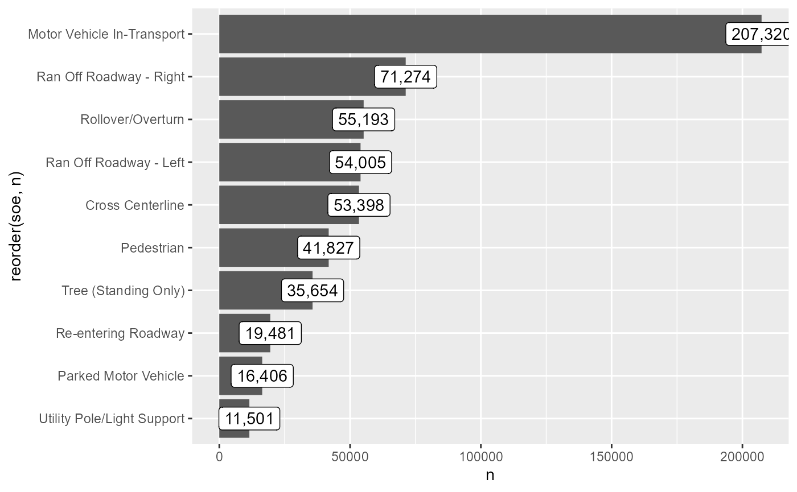

library(rfars)
library(dplyr)
#>
#> Attaching package: 'dplyr'
#> The following objects are masked from 'package:stats':
#>
#> filter, lag
#> The following objects are masked from 'package:base':
#>
#> intersect, setdiff, setequal, union
library(ggplot2)
library(magrittr)
library(tidyr)
#>
#> Attaching package: 'tidyr'
#> The following object is masked from 'package:magrittr':
#>
#> extractThis vignette explores the Vsoe (Vehicle Sequence of Events) data to visualize crash sequence patterns.
Vsoe is one of three event-based data files, the others being Cevent and Vevent. According to the data dictionary, Vevent “has the same data elements as the Cevent data file” plus “a data element that records the sequential event number for each vehicle,” and the Vsoe file “has a subset of the data elements contained in the Vevent data file (it is a simplified Vevent data file)” (p. 16). rfars therefore omits Cevent and Vevent.
Data
First we download the data. Calling get_fars(proceed=TRUE) will download data from 2015 to 2020 for all states, and store a ‘FARS data’ folder in your working directory, with subfolders for raw and prepared files. When proceed is set to FALSE, (the default) R will ask your permission before downloading files.
get_fars(proceed=TRUE)
#> Raw data files have been saved to C:/Users/s87ja/Dropbox/Work/toXcel/FARS/rfars/vignettes/FARS data/raw/
#> Preparing the 2015 files...................
#> Preparing the 2016 files...................
#> Warning: One or more parsing issues, call `problems()` on your data frame for details,
#> e.g.:
#> dat <- vroom(...)
#> problems(dat)
#> Preparing the 2017 files...................
#> Warning: One or more parsing issues, call `problems()` on your data frame for details,
#> e.g.:
#> dat <- vroom(...)
#> problems(dat)
#> Preparing the 2018 files...................
#> Warning: One or more parsing issues, call `problems()` on your data frame for details,
#> e.g.:
#> dat <- vroom(...)
#> problems(dat)
#> One or more parsing issues, call `problems()` on your data frame for details,
#> e.g.:
#> dat <- vroom(...)
#> problems(dat)
#> Preparing the 2019 files...................
#> Warning: One or more parsing issues, call `problems()` on your data frame for details,
#> e.g.:
#> dat <- vroom(...)
#> problems(dat)
#> Preparing the 2020 files...................
#> Warning: One or more parsing issues, call `problems()` on your data frame for details,
#> e.g.:
#> dat <- vroom(...)
#> problems(dat)
#> Prepared data files have been saved to C:/Users/s87ja/Dropbox/Work/toXcel/FARS/rfars/vignettes/FARS data/prepared/Once you have the data on your hard drive, you don’t need to download it again. Calling use_fars() looks in the working directory for the prepared FARS files, stacks them, and brings them into the current environment.
myFARS <- use_fars()The Vsoe data is stored in the events tibble of the object returned by use_fars(). Here we see the top 10 individual events:
myFARS$events %>%
group_by(soe) %>% summarize(n=n()) %>%
arrange(desc(n)) %>%
slice(1:10) %>%
ggplot(aes(x=n, y=reorder(soe, n), label=scales::comma(n))) +
geom_col() +
geom_label()
We can also see the top 10 most common sequences:
myFARS$events %>%
select(-aoi) %>%
pivot_wider(names_from = "veventnum", values_from = "soe", values_fill = "x",
names_prefix = "event") %>%
select(starts_with("event")) %>%
group_by_all() %>%
summarize(n=n(), .groups = "drop") %>%
arrange(desc(n)) %>%
slice(1:10) %>%
select(event1, event2, n)
#> # A tibble: 10 × 3
#> event1 event2 n
#> <chr> <chr> <int>
#> 1 Motor Vehicle In-Transport x 109173
#> 2 Pedestrian x 32015
#> 3 Cross Centerline Motor… 14113
#> 4 Motor Vehicle In-Transport Motor… 8392
#> 5 Parked Motor Vehicle x 7902
#> 6 Pedalcyclist x 4567
#> 7 Ran Off Roadway - Right Tree … 3371
#> 8 Motor Vehicle In-Transport Rollo… 3349
#> 9 Motor Vehicle In-Transport Strikes or is Struck by Cargo, Pers… x 2862
#> 10 Ran Off Roadway - Right Rollo… 2519Below we consider all state transitions - the transition from one event to the next in the sequence. For example, the sequence A-B-C-D has three transitions: A to B, B to C, and C to D. The graph below shows a subset of the more common transitions in the crash sequences. It is interpreted as follows: the event on the y-axis was followed by the event on the x-axis in the percentage of sequences shown at the intersection of the two events. For example, vehicles went from ‘re-entering roadway’ to ‘cross centerline’ in 40% of sequences. Note that we have added a state labelled ‘Pre-Crash’ to help account for sequences with just one event.
myFARS$events %>%
group_by(year, state, st_case, veh_no) %>%
dplyr::rename(event_to = soe) %>%
mutate(event_from = data.table::shift(event_to, fill = "Pre-Crash")) %>%
select(event_from, event_to) %>%
group_by(event_from, event_to) %>% summarize(n=n()) %>%
group_by(event_from) %>% mutate(n_from = sum(n)) %>%
mutate(n_pct = n/n_from) %>%
filter(n_pct>.1, n>500) %>%
mutate(event_from = stringr::str_wrap(event_from, 40),
event_to = stringr::str_wrap(event_to, 40)) %>%
ggplot(aes(y=event_from, x=event_to, fill=n_pct, label=scales::percent(n_pct, accuracy = 1))) +
viridis::scale_fill_viridis() +
geom_label() +
theme(
axis.text.x.bottom = element_text(angle=270, hjust = 0, vjust=.5),
legend.position = "none"
)
#> Adding missing grouping variables: `year`, `state`, `st_case`, `veh_no`
#> `summarise()` has grouped output by 'event_from'. You can override using the
#> `.groups` argument.